O software SMART consiste em várias perspectivas e componentes que interagem entre si para produzir um fluxo de trabalho para o gerenciamento de patrulhas e as informações coletadas durante as patrulhas. Muitas perspectivas têm componentes semelhantes, trazendo familiaridade em todo o aplicativo e, ao mesmo tempo, fornecendo funcionalidade exclusiva para cada perspectiva.
Visão geral
Componentes SMART
| Componente SMART | Ícone |
| Perspectiva do Visualizador de Mapa | |
| Perspectiva de Dados de Campo | |
| Perspectiva de Consulta | |
| Relatórios | |
| Planos SMART | |
| Inteligência SMART |
A Perspectiva da Visualização de Mapa é o ponto de partida ao fazer login na SMART. Nesta janela serão exibidas as cinco (5) camadas administrativas previamente carregadas, na aba Camadas, localizada no lado esquerdo da tela. Os ícones acima da lista de camadas permitem reordenar, redefinir e aplicar zoom nas extensões das camadas. Nessa perspectiva, um Administrador pode fazer alterações no cartucho padrão da Área de Conservação (consulte Criando Mapas Básicos).
Nota: As janelas de mapeamento existem nas Perspectivas de Patrulha e Consulta e a navegação do mapa para essas janelas é a mesma que a Perspectiva da Visão de Mapa.
| Move a camada selecionada para cima na lista | |
| Move a camada selecionada para baixo na lista | |
| Altera o estilo da camada selecionada | 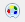 |
| Alterna se a camada selecionada deve ser focada ou não | |
| Aplica zoom nas camadas selecionadas |
Navegar na janela de mapeamento da SMART é um processo simples que segue muitos dos mesmos procedimentos que outros aplicativos GIS. Os usuários podem deslocar-se pelo mapa, aumentar ou diminuir o zoom ou ainda ampliar a extensão total dos arquivos espaciais carregados na janela de mapeamento.
| Salvar um mapa de base | |
| Selecionar Mapa de Base | |
| Panorâmica | |
| Zoom na área | |
| Afastar Zoom | |
| Aproximar Zoom | |
| Zoom em toda extensão | |
| Adicionar uma camada ao mapa |
Definir Escala e Projeção do Mapa
Na parte inferior da janela de mapeamento, os usuários podem definir manualmente a escala da vista e as projeções disponíveis.
Observação: projeções adicionais só estão disponíveis depois que um Administrador adicionar as projeções adicionais à Área de Conservação (consulte Gerenciar Projeções)
Camadas espaciais adicionais podem ser adicionadas à perspectiva de mapeamento para dar contexto aos cinco (5) arquivos de limite que foram carregados durante a inicialização da Área de Conservação.
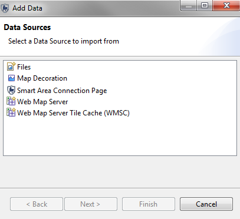
Arquivos - ESRI Shapefiles, arquivos ArcGrid e vários formatos de arquivo de imagem são suportados.
Decoração do Mapa - rosa dos ventos, barra de escala, legenda e uma grade são elementos cartográficos adicionais.
Página de Conexão de Área SMART - abre a caixa de diálogo para adicionar/atualizar os cinco (5) arquivos de limite originais.
Servidor de Mapa da Web - adiciona uma conexão a um Servidor de Mapa da Web (WMS).
Cache de Bloco do Servidor de Mapa da Web - adiciona uma conexão a um Cache de Bloco do Servidor de Mapa da Web (WMS-C).
A SMART tem um extenso conjunto de ferramentas para criar mapas personalizados com cores e rótulos definidos pelo usuário. A caixa de diálogo Editor de Estilo permite a personalização de vários componentes cartográficos para camadas de pontos, linhas e polígonos.
Propriedades de Estilo
Geral - define a escala de visualização mínima/máxima e qualquer desvio potencial aplicado à visualização da camada.
Borda - define as características da borda do polígono.
Preencher - define as características internas do polígono.
Etiquetas - define as características de rotulagem.
Filtro - filtros personalizados podem ser criados para reduzir recursos indesejados das janelas de mapeamento.
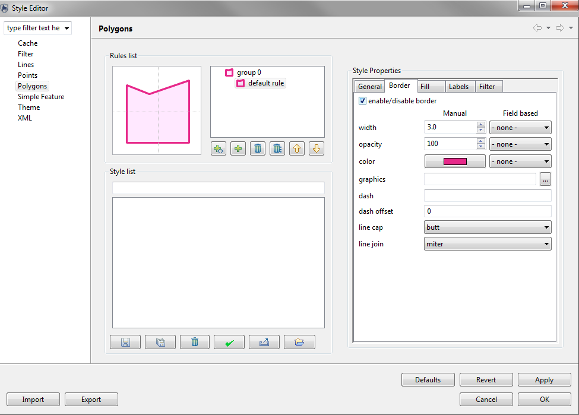
As camadas podem ser removidas selecionando a camada e clicando com o botão direito do mouse para exibir funcionalidades adicionais, incluindo Excluir. As camadas também podem ser excluídas selecionando a camada e clicando no botão "Excluir" no teclado.
Camadas individuais podem ser exportadas para Shapefiles e toda a janela de mapeamento pode ser exportada para um arquivo de imagem. A exportação de camadas ou imagens de mapa pode ser acessada através do menu Arquivo - Exportar Mapa ou selecionando camadas e clicando com o botão direito do mouse para acessar a funcionalidade Exportar Mapa.

Os mapas de base são uma representação cartográfica salva que pode ser aplicada a toda a Área de Conservação para fornecer consistência através das várias perspectivas. Camadas, cores e rótulos são alguns dos elementos que podem ser salvos em um mapa base. Vários mapas de base podem ser criados pelo Administrador, e eles podem ser acessados mais tarde pelas outras contas de nível de usuário.

Criando e selecionando um mapa de base
A cartografia para mapas de base é definida na Perspectiva do Mapa. Após a cartografia ter sido configurada, o mapa de base é salvo como novo mapa base de base ou sobrescrito em um mapa existente. 
Depois que um mapa(s) de base tiver sido criado, o Administrador poderá definir um para ser o padrão da Área de Conservação.
Um usuário não administrador pode optar por usar um mapa de base alternativo para uma sessão aberta usando a opção Selecionar mapa base e escolhendo "Usar um padrão de sessão". 
Gerenciando Mapas de Base
Ao selecionar Área de Conservação - Gerenciar Mapas Básicos, um Administrador pode definir um mapa base como padrão para a Área de Conservação, excluir um mapa base existente ou renomear/traduzir seu nome.
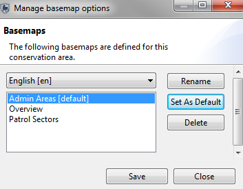
Mapas de Base em Relatórios
Mapas incorporados em Relatórios também usam mapas de base para definir a cartografia do objeto do mapa. Na guia CamadasdoMapa, o usuário pode selecionar qual mapa base usar para o objeto de mapa de relatório.
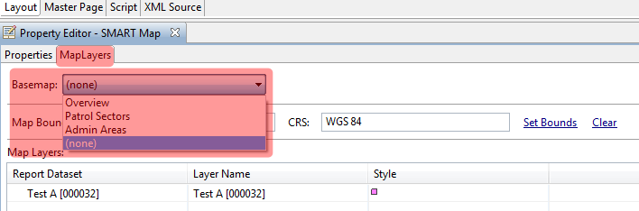
A Perspectiva de Patrulha é onde as patrulhas são criadas e suas observações associadas são registradas. A Perspectiva de Patrulha é dividida em três partes.
Visão de Lista de Patrulha - A lista de patrulhas inseridas na Área de Conservação.
Camadas - Camadas de mapeamento, incluindo os pontos de localização e trilhas de patrulha na janela de mapeamento.
Janela de Informação da Patrulha - Esta é a janela principal onde as informações coletadas durante a patrulha são acessadas. A parte inferior desta janela terá:

Como parte do processo de inicialização de uma nova Área de Conservação, o Administrador é solicitado a configurar vários parâmetros de dados de campo.
As Opções de Dados de Campo permitem:
Gravar Distância e Direção: Se marcada, os dados de patrulha terão duas colunas extras para registrar deslocamentos de distância e direção das observações das informações de coordenadas capturadas pelo GPS.
Opções de Ediição: Indica o número de dias após a entrada de dados durante os quais os dados de patrulha podem ser editados por contas que não são de administrador. Um valor de -1 especifica que os dados da patrulha serão sempre editáveis.
Projeções de Entrada de Dados: Projeção em que os dados são exibidos e inseridos por padrão.

Mandados de patrulha são uma lista de mandados associados a cada patrulha. Este processo não é um requisito durante a inicialização das informações de patrulha para a Área de Conservação.
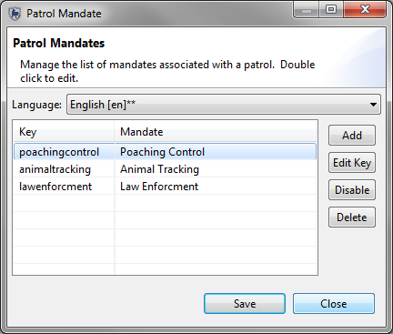
Adicionar: Adiciona novos mandados à lista.
Desabilitar/Habilitar: Um mandato pode ser desativado se não estiver em uso no momento, mas ainda tem patrulhas associadas a ele. Mais tarde, pode ser ativado para uso futuro.
Excluir: Exclui permanentemente o mandado da lista. Isso só é possível se nenhuma informação de patrulha estiver associada a ele.
Editar Chave: Permite alterações manuais na chave primária.
Nota: O idioma é definido antes de entrar nas entradas da lista de mandatos.
Tipos de Patrulha são os tipos de transporte usados pelas equipes de patrulha na Área de Conservação. As opções básicas para os tipos de patrulha são Aérea, Terrestre e Marinha. Cada uma dessas opções pode ser desativada se não estiver em uso pela Área de Conservação. As Opções de Transporte são os tipos específicos de transporte para as opções Terrestre, Aérea e Marinha.

Adicionar: Adiciona novas opções/tipos de transporte à lista.
Desabilitar/Habilitar: Uma opção/tipo de transporte pode ser desativada se não estiver em uso no momento, mas ainda tem patrulhas associadas a ela. Ela pode ser ativada depois para uso futuro.
Excluir: Exclui permanentemente a opção/tipo da lista. Isso só é possível se nenhuma informação de patrulha estiver associada a ela.
Editar Chave: Permite alterações manuais na chave primária.
Nota: O idioma é definido antes de entrar nas entradas da lista de mandatos.
Equipes de patrulha, seus mandados e descrições são todos inseridos e gerenciados nesta tela. Se nenhum mandado tiver sido criado, não haverá opção para selecionar na lista. Este processo não é um requisito durante a inicialização das informações de patrulha para a Área de Conservação.

Equipe: O nome da equipe de patrulha.
Mandado: O mandado da equipe de patrulha selecionado da lista de mandatos criados anteriormente.
Descrição: A descrição da equipe de patrulha.
Adicionar: Adiciona novas equipes de patrulha à lista.
Desabilitar/Habilitar: Uma equipe de patrulha pode ser desativada se não estiver em uso no momento, mas ainda tem patrulhas associadas a ele. Ela pode ser ativada depois para uso futuro.
Excluir: Exclui permanentemente a equipe da lista. Isso só é possível se nenhuma informação de patrulha estiver associada a ela.
Nota: O idioma é definido antes de entrar nas entradas da lista de mandatos.
As patrulhas e suas observações podem ser inseridas por um usuário SMART com as permissões apropriadas, após as propriedades Área de Conservação e Patrulha terem sido concluídas.
A criação de uma nova patrulha começa com a seleção de "Criar Nova Patrulha" no menu Patrulha para iniciar o assistente de entrada de patrulha. O assistente de entrada de patrulha da SMART é projetado para guiar o usuário pelo processo de inserção das características da patrulha.
Etapas da janela de entrada de patrulha
Assistente de Patrulha de Múltiplas Pernas
Uma patrulha de múltiplas pernas ocorre quando um grupo de patrulha se divide em dois ou mais grupos ou a patrulha muda de tipo de transporte ou líder. Uma divisão de patrulha divide o grupo único em dois grupos, cada um com seu próprio líder e tipo de transporte. Se uma patrulha exigir divisão adicional, um dos subgrupos exigirá uma divisão adicional. Grupos divididos podem ser recombinados em um único grupo ou deixados para completar a patrulha em grupos separados.

As coordenadas dos pontos de localização são primeiramente inseridas na SMART através de processos automatizados que extraem os pontos de localização diretamente de uma unidade GPS ou através da importação de arquivos GPX padronizados. O assistente de importação SMART possui opções para atribuir automaticamente os pontos de localização no dia correto com base no registro de data e hora do GPS ou para que o usuário atribua pontos de localização manualmente a um dia específico, se necessário. Existe uma opção manual para inserir as coordenadas do ponto de localização se as informações de localização não foram capturadas por um GPS.

Hora de início - o horário de início da patrulha para esse dia ou perna.
Horário Final - o horário final da patrulha para esse dia ou perna.
Minutos de Descanso - número de minutos em que a patrulha estava descansando.
Distância percorrida (km) - distância calculada percorrida para o dia ou a perna de patrulha (com base nas informações da faixa do GPS ou calculadas pelos pontos de referência disponíveis).
Definir Faixa - abre o assistente de importação de faixas do GPS.
Visualizar Pontos de Trilha - abre uma janela para visualizar as coordenadas do pontos de trilha e as marcas temporais.
Importar Pontos de Localização - abre o assistente de ponto de localização do GPS.
Campos da Tabela de Pontos de Localização
IDs de Ponto de Localização - ID do Ponto de Localização atribuído pelo GPS ou pela SMART, se inserido manualmente.
Longitude - Coordenada de longitude capturada pelo GPS ou digitada pelo usuário SMART.
Latitude - Coordenada de latitude capturada pelo GPS ou digitada pelo usuário SMART.
Hora - Marca temporal capturada pelo GPS
Observação - Clicar no ícone na célula Observação iniciará o assistente Observação de Ponto de Localização
Comentário - Os comentários introduzidos pelo GPS são automaticamente introduzidos neste campo. A entrada manual de comentários também é possível.
Anexos - Anexos de arquivos são adicionados aos pontos de localização clicando no ícone nesta célula para abrir a janela de anexos.
A etapa inicial depois de selecionar o link Importar Pontos de Localização é selecionar o método de importação.
Importação por GPS - Selecione este método se o GPS não atuar como um dispositivo de armazenamento em massa.
Importação por GPX - Selecione este método se o GPS funcionar como um dispositivo de armazenamento em massa.
Arquivo CSV - Selecione este método se seus dados estiverem armazenados em um arquivo CSV.
Opções de Importação por GPS
Tipo de dispositivo GPS - Selecione o dispositivo GPS e o protocolo.
Importar tudo (e atribuir ao dia correto) - A SMART usará o registro de data e hora do GPS e atribuirá os pontos de localização coletados à data correta.
Importar somente pontos de localização para <data> - A SMART importará apenas os pontos de localização da data selecionada.
Selecione quais pontos de localização serão importados para <data> - O usuário SMART selecionará e atribuirá pontos à data selecionada.
Selecione os pontos de localização para a importação
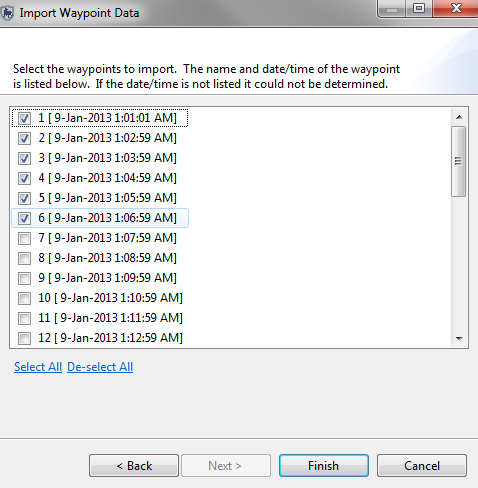
A seleção dos pontos de localização pode ser feita individualmente ou através da opção Selecionar Tudo.
Opções de Importação por GPX
Adicionar - Abre a janela para permitir a seleção de arquivos GPX. Os arquivos podem ser armazenados no GPX ou em um computador independente.
Remover - Remove os arquivos GPX selecionados do assistente.
Importar tudo (e atribuir ao dia correto) - A SMART usará o registro de data e hora do GPS e atribuirá os pontos de localização coletados à data correta.
Importar somente pontos de localização para <data> - A SMART importará apenas os pontos de localização da data selecionada.
Selecione quais pontos de localização serão importados para <data> - O usuário SMART selecionará e atribuirá pontos à data selecionada.
Opções de Arquivo Importação por Arquivo CSV
Selecionar Arquivo CSV - Use isto para selecionar o arquivo CSV do qual você deseja importar seus pontos de localização.
Importar tudo (e atribuir ao dia correto) - A SMART usará o registro de data e hora do Arquivo e atribuirá os pontos de localização coletados à data correta.
Importar somente pontos de localização para <data> - A SMART importará apenas os pontos de localização da data selecionada.
Selecione quais pontos de localização serão importados para <data> - O usuário SMART selecionará e atribuirá pontos à data selecionada.

Configuração de Arquivo CSV
Coluna X - selecione o texto da primeira linha do arquivo (cabeçalho ou valor) que representa a coluna na qual os valores de coordenadas X estão armazenados.
Coluna Y - selecione o texto da primeira linha do arquivo (cabeçalho ou valor) que representa a coluna onde os valores das coordenadas Y estão armazenados.
Data - selecione o texto da primeira linha do arquivo (cabeçalho ou valor) que representa a coluna onde os valores de data são armazenados.
Hora - selecione o texto da primeira linha do arquivo (cabeçalho ou valor) que representa a coluna na qual os valores de hora estão armazenados. Os formatos de hora válidos são os seguintes:
Colunas Opcionais
ID do Ponto de Localização - Selecione o texto que representa o ID do ponto de localização que você gostaria de usar. Se deixado em branco, o sistema selecionará o próximo número mais alto no dia da perna de patrulha como o id.
Campo de comentários - Selecione o texto que representa os comentários que você deseja adicionar ao ponto de localização. Se deixado em branco, o campo de comentários no SMART ficará em branco.
Opções de Dados
Projeção de Coordenada - Selecione em qual projeção seus dados de coordenadas X e Y estão armazenados.
Formato de data - O formato em que as datas da coluna Data estão armazenadas. Consulte http://docs.oracle.com/javase/7/docs/api/java/text/SimpleDateFormat.html para obter formatos de data. Você pode digitar campo para descrever seu formato se ele não corresponder a um dos formatos listados.
Pula a primeira linha... - Marque esta caixa de diálogo se você tiver uma linha de cabeçalho no topo dos seus dados.
Se você estiver tendo problemas ao importar pontos de localização de arquivos CSV, esta seção deverá fornecer esclarecimentos e orientações sobre como abordar vários problemas freqüentemente encontrados. Muitas vezes, tudo o que é necessário para que a importação funcione é uma simples manipulação do arquivo. Muitos dos exemplos aqui ilustram como criar novas colunas com data e hora em formatos que podem ser facilmente importados. A funcionalidade de importação de CSV carrega somente pontos de localização, não observações reais. Isso é útil para acelerar os dados que vêm em formato digital, mas não os automatizas completamente.
Arquivos com data e hora na mesma coluna
Você precisa garantir que as colunas de data/hora estejam corretas. Se as informações de data e hora forem combinadas em uma coluna, você terá duas opções para corrigi-las.
Opção 1:
Opção 2:
NOTA: para este exemplo, estamos supondo que a data e hora estão na coluna A. Se a data e hora estiverem em uma coluna diferente, como a coluna G, substitua as referências ou fórmulas da coluna A por G.
Arquivos sem data ou hora
Se você estiver importando um arquivo CSV sem data ou hora, presumivelmente você sabe em que dia essa patrulha foi realizada. A partir daí, você pode atribuir horários arbitrários. Este passo é necessário desde já que a hora é necessária.
a) Uma opção seria criar uma fórmula para adicionar 10 minutos a cada linha.
Arquivos com linhas de dados adicionais antes dos dados do ponto de localização
Se você estiver importando um arquivo CSV com linhas acima dos cabeçalhos de coluna, será necessário remover as linhas adicionais para que os cabeçalhos das colunas apareçam como primeira linha. Siga os passos abaixo.
A SMART permite a entrada manual de informações sobre pontos de localização.
Adicionar Ponto de Localização - Entrada manual de informação de ponto de localização.
Apagar Ponto(s) de Localização - Apaga pontos de localização selecionados.
Mover Ponto(s) de Localização - Reatribui o(s) ponto(s) de localização selecionado(s) para outro dia.
Notas especiais sobre Importação de pontos de localização do GPS para patrulhas com múltiplas pernas
Se a informação da trilha foi capturada pelo dispositivo GPS, o processo para importar a informação da trilha é o mesmo que para pontos de localização, exceto que o processo é iniciado selecionando Configurar Trilha...
Nota: Trilhas podem ser criadas a partir de pontos de localização disponíveis se não houver informações de rastreamento de GPS coletadas.
Depois que uma patrulha é criada e os pontos de localização são importados, o próximo passo é inserir as observações coletadas durante a patrulha.
O processo começa clicando no botão na coluna Observação. Este botão iniciará o assistente de entrada de Observação de Ponto de Localização.
Depois que uma patrulha for criada e contiver informações de ponto de localização e/ou faixa, o usuário SMART poderá usar a guia Mapa (canto inferior direito) para visualizar as informações de pista e de ponto de localização.
A navegação do mapa será igual à da janela Mapeando Perspectiva . A única adição é o ícone de informações [  ]. Ao selecionar essa ferramenta e, em seguida, clicar em cima de um elemento do mapa, a SMART abrirá uma janela exibindo as informações de atributo associadas a esse recurso.
]. Ao selecionar essa ferramenta e, em seguida, clicar em cima de um elemento do mapa, a SMART abrirá uma janela exibindo as informações de atributo associadas a esse recurso.
A entrada de dados na SMART foi projetada para ser distribuível. Vários usuários SMART podem inserir patrulhas e observações associadas em vários computadores e exportar a patrulha depois que as informações forem inseridas. A patrulha é exportada em uma estrutura XML e contém arquivos anexados (se houver). Este pacote XML pode ser posteriormente importado para um computador diferente.
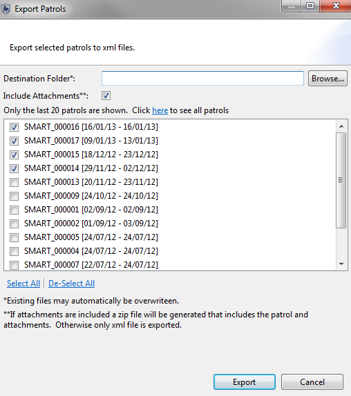
Navegar - Use para selecionar o local das patrulhas exportadas.
Incluir Anexos - Se selecionado, as exportações de patrulha incluirão quaisquer anexos de arquivo associados aos pontos de localização.
Filtro de Patrulha - Por padrão, somente as últimas 20 patrulhas são mostradas, na ordem inversa. Se mais patrulhas forem necessárias, clique no link "aqui" para mostrar todas as patrulhas.
Selecionar Tudo - as patrulhas podem ser selecionadas individualmente ou todas de uma vez clicando em Selecionar tudo.
Desfazer Selecionar Tudo - Este botão irá desmarcar todas as patrulhas selecionadas anteriormente.
Exportar - Executa o processo de exportação de patrulha.

Navegar - Importa um único arquivo de patrulha.
Adicionar - Permite a seleção de vários arquivos de patrulha.
Remover - Remove os arquivos de patrulha indesejados do processo de importação.
Importar - Executa o processo de Importar de patrulha.
Atribuir Novos IDs de Patrulha - Substitui o ID na importação XML e atribui novos IDs às patrulhas
Manter IDs de Patrulha - Preserva o ID original da patrulha
A Perspectiva de Consulta é aquela na qual a maioria dos recursos analíticos da SMART são encontrados. As consultas podem ser criadas, executadas, salvas e exportadas/importadas. Os resultados das consultas podem ser visualizados diretamente na Perspectiva da Consulta ou exportados para uso em outros aplicativos de software.
As consultas são classificadas pelo tipo de dados que você deseja consultar e o tipo de resultados que deseja receber.
Existem diversos tipos de dados que você pode consultar, dependendo de quais plug-ins você instalou em seu software SMART. Os tipos básicos que todos os usuários terão são:
Outros Tipos
Existem 4 tipos de resultados de consultas diferentes disponíveis em todos os tipos de dados. Alguns plug-ins possuem tipos adicionais suportados. Os quatro tipos básicos de resultados que você pode selecionar são:
Outros Tipos
Cada um desses tipos de consulta tem sua própria finalidade e seu próprio conjunto de resultados que podem fornecer ao usuário informações específicas sobre o que está acontecendo na Área de Conservação.
A perspectiva de consulta SMART compartilha a mesma estrutura básica para todos os tipos de consulta. Componentes individuais dos cinco tipos de consulta irão variar dependendo de qual consulta é escolhida.
Nota: As consultas de patrulha e ponto de localização compartilham os mesmos componentes entre si e com muitos dos mesmos componentes que as consultas de resumo e de grade .
Os usuários são encorajados a usar e ler as instruções na tela fornecidas pelo "Novo Assistente de Consulta" se não tiverem certeza do tipo de consulta que gostariam de criar. Use o item do menu: “Consulta-> Novo Assistente de Consulta..." para iniciar o assistente.
Este assistente irá ajudá-lo a selecionar quais dados você deseja consultar e, em seguida, qual tipo de resultado você deseja.

Uma consulta SMART é uma expressão lógica usada para filtrar as entradas no banco de dados. A SMART possui cinco tipos de consulta (observação, incidente, patrulha, resumo e grade).
| Tipo de Consulta | Ícone |
| Observação | |
| Incidente | |
| Patrulha | |
| Resumo | |
| Grade |
Consultas de observação são usadas para exibir o que foi encontrado durante a patrulha. Tais consultas exibem os registros de observação que atendem aos requisitos dos filtros. Não é feito nenhum resumo (ou seja, sem totais, quantidades, agregações, etc.). As consultas podem ser visualizadas em uma tabela ou em um mapa. Quando exibidas em um mapa, vários pontos de mapeamento existirão num local se mais de uma observação estiver presente em um ponto de localização.
Exemplo: Mostre-me todas as observações para a Patrulha ID 1021
| ID da Patrulha | Perna de patrulha | Data da Patrulha | Hora | Tipo de Observação |
| 1021 | 1 | 3 Nov, 2011 | 9:34 | Atividade humana |
| 1021 | 1 | 3 Nov, 2011 | 10:23 | Animais |
Incidente
Exibe os locais que atendem aos requisitos dos filtros. Essa consulta retornará um único local que atenda aos requisitos do filtro de consulta. As consultas de incidentes são usadas para consultar várias categorias para ver onde várias categorias de observação ocorreram e quais outras observações foram vistas nesse local. As consultas podem ser visualizadas em uma tabela ou em um mapa. Quando exibidas em um mapa, apenas um ponto de mapeamento existirá no local.
Exemplo: Mostre-me onde as patrulhas confiscaram armas e carcaças.
| ID da Patrulha | Perna de patrulha | Data da Patrulha | ID do Ponto de Localização | X | Y | Hora |
| 1011 | 1 | 1 Nov, 2011 | 7 | 49,5 | -123,0 | 7:34 |
| 1014 | 1 | 2 Nov, 2011 | 32 | 49,1 | -122,8 | 12:14 |
Exibe as patrulhas que foram selecionadas usando os filtros de consulta (nenhuma informação sobre observações ou incidentes é exibida). As faixas de GPS de patrulha são exibidas na janela de mapeamento. Detalhes sobre as patrulhas são exibidos na janela tabular.
Exemplo: Mostre-me todas as patrulhas que encontraram uma carcaça de elefante
| ID da Patrulha | Perna de patrulha | Data da Patrulha | Hora |
| 101 | 1 | 3 Nov, 2011 | 16:34 |
| 103 | 1 | 7 Nov, 2011 | 10:23 |
Um resumo sintetiza os dados brutos e permite que eles sejam agrupados em diferentes categorias. Os itens que podem ser resumidos são valores como o número total de patrulhas, a distância total percorrida, o número total de observações de armadilhas e os encontros de taxa (quantos X por km, horas-homem, hora). Agrupamentos são categorias como setores gerenciais, tipos de patrulha, mandados de patrulha, bases, equipes, etc. Os resumos só podem ser vistos como tabelas. Os resultados são exibidos apenas em tabelas.
Exemplo: Mostre-me o número total de armadilhas observadas em cada setor de manejo para cada um dos últimos 6 meses.
| Janeiro | Fevereiro | Março | Abril | Maio | Junho | |
| # de armadilhas | # de armadilhas | # de armadilhas | # de armadilhas | # de armadilhas | # de armadilhas | |
| Setor A | 7 | 6 | 3 | |||
|---|---|---|---|---|---|---|
| Setor B | 15 | 10 | 2 | 19 | 5 | 3 |
Os resultados são exibidos em um formato de grade (gráfico raster) especificado pelo usuário com resultados agregados com base no tamanho de grade definido. Os resultados podem ser visualizados em uma tabela ou em um mapa. Estes são comumente chamados de mapas de calor.
Exemplo: Mostre-me quantas patrulhas estavam em cada célula da grade
| ID do Azulejo X | ID do Azulejo Y | Valor |
| -12358 | 4839 | 4 |
| -12356 | 4838 | 2 |

| Ícone ou Link | Descrição |
| Filtra a data da consulta. | |
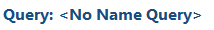 |
Usado para alterar o nome da consulta. |
| Alterar o nome da consulta. Filtra os campos retornados nos resultados da consulta. | |
| Alterna entre resultados tabulares e resultados mapeados. | |
 |
Localização de consultas e resumos salvos. Por padrão, existem duas pastas (Consultas de Área de Conservação e Minhas Consultas). Qualquer conta de usuário pode salvar em Minhas Consultas, mas os itens salvos só podem ser acessados pela conta de usuário que as criou. Somente contas de administrador e gerente podem ser salvas na pasta Consultas da Área de Conservação. |
| Usado para filtrar os resultados com base em informações de patrulha. | |
| Usado para filtrar os resultados com base em categorias e atributos no modelo de dados. | |
| Usado para filtrar os resultados com base nos limites espaciais da Área de Conservação. | |
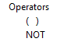 |
Operadores de NÃO e parênteses () são usados para alterar a lógica da consulta. |
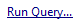 E |
Executa a consulta. |
| Limpar a consulta. | |
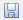 |
Salva a consulta. |
| Guia contendo os componentes usados para criar a consulta ou resumo. | |
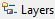 |
Guia contendo as camadas do mapa. |
| Janela na qual a consulta ou resumo é construída, apagada, executada e salva. | |
| Um filtro para selecionar entre observações baseadas em patrulha e incidentes independentes | |
| Um filtro para exibir incidentes ou observações ao executar uma consulta. |
O fluxo de trabalho básico para criar consultas é o mesmo para todos os tipos de consultas, mas as especificações variam dependendo do tipo de consulta que está sendo construído.
Tipos de Filtro
Patrulha - características usadas na definição da patrulha (base, equipe, membros, etc. …)
Modelo de Dados - componentes do modelo de dados da Área de Conservação. Categorias de modelos de dados ou atributos podem ser selecionados.
Área - permite a filtragem espacial da patrulha com base nos cinco limites padrão da Área de Conservação.
Operadores - são usados para alterar a lógica da consulta para permitir que os usuários SMART consigam criar consultas mais complexas.
Operadores incluem:
| Definição da Consulta | Descrição | Filtros Usados |
| Todas as patrulhas ou observações lideradas pela Equipe 2 que saíram da Base HQ. | Patrulha | |
| Todas as patrulhas ou observações em que Rogerio Barreto era o líder da patrulha. | Patrulha | |
| Todas as patrulhas ou observações registradas na categoria (ou subcategorias) de Uso de Recursos Biológicos - Extração de madeira e colheita de madeira. | - Categorias - Modelo de Dados | |
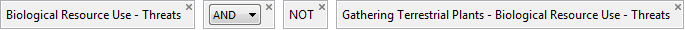 |
Todas as ameaças sob a categoria Uso de Recursos Biológicos, mas não Coleta de Plantas Terrestres. | - Categorias - Modelo de Dados |
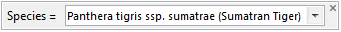 |
Seleciona todas as patrulhas ou observações que encontraram uma Onça Parda independentemente da categoria em que foi gravado. | Modelo de Dados - Atributo (global) |
| Seleciona todas as patrulhas ou observações que confiscaram um tigre-de-sumatra morta da categoria principal de Caça e Coleta de Animais Terrestres | Modelo de Dados - Atributo (Categoria) | |
| Seleciona todas as patrulhas ou observações que ocorreram na Área Administrativa Leste | Área | |
| Todas as patrulhas ou observações que encontraram uma Ameaça de Caça e Coleta e ocorreram na Área Administrativa Leste. | Modelo de Dados - Categoria de Modelo de Dados |
|
 |
Todas as patrulhas ou observações da Equipe 2 que encontraram rastros de tigre-de-sumatra nas áreas administrativas do leste ou oeste | Modelo de Dados - Atributo (categoria específica) & Patrulha & Área |
Filtros de Observação e Incidente
Depois que os filtros básicos (ver acima) tiverem sido construídos, o usuário terá uma opção de filtro secundário para aprofundar os resultados da consulta.
| Tipo de Consulta | Tipo de Filtro | Razão para uso | Resultados Retornados |
| Observação | Observação | Para encontrar todas as observações brutas. Não consultar entre categorias. | Todas as observações brutas e podem retornar muitas instâncias de um único XY. |
| Observação | Incidente | Para descobrir quais outras observações ocorreram nos locais dos incidentes. Isso permite que você consulte categorias. | Todas as observações brutas encontradas nos incidentes que atendem aos requisitos do filtro principal. |
| Incidente | Observação | Exibe os locais que atendem aos requisitos dos filtros. Não consultar entre categorias. | Retornará as informações básicas de localização para a consulta. Nenhuma informação de observação ou incidente é incluída nos resultados. |
| Incidente | Incidente | Para encontrar os locais não duplicados e realizar consultas em categorias. | Retornará as informações básicas de localização para a consulta. Nenhuma informação de observação ou incidente é incluída nos resultados. |
Visão geral de Consulta de Resumo

| Ícone ou Link | Descrição |
| Filtra a data da consulta. | |
| Usado para alterar o nome da consulta. | |
| Alterar o nome da consulta. Filtra os campos retornados nos resultados da consulta. | |
|
Localização de consultas e resumos salvos. Por padrão, existem duas pastas (Consultas de Área de Conservação e Minhas Consultas). Qualquer conta de usuário pode salvar em Minhas Consultas, mas os itens salvos só podem ser acessados pela conta de usuário que as criou. Somente contas de administrador e gerente podem ser salvas na pasta Consultas da Área de Conservação. |
| Filtra a lista de consultas disponíveis. A construção dos filtros é a mesma que uma observação ou uma consulta de patrulha. | |
| E | Executa a consulta. |
| Salva a consulta. | |
| Limpar a consulta. | |
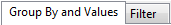 |
Abre janelas para "Guia Grupo Por Valores" e "Guia Filtro". |
| Filtra informações baseadas em patrulhas e informações de fontes independentes | |
| Agrupar pelos arquivos de limite espacial associados à Área de Conservação | |
| Agrupar por Opções usadas para agregar os resultados do valor de resumo. | |
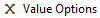 |
Valores de resumo disponíveis usados para criar o resumo. |
| Grupo Por será colocado verticalmente na tabela como o cabeçalho inicial para cada linha. | |
| Grupo Por será colocado horizontalmente na tabela como o cabeçalho inicial para cada coluna. | |
| Valores de patrulha ou modelo de dados usados para criar o resumo. |
Agrupar por Opções
Itens gerais - agrega dados com base em informações de patrulha ou provenientes de fontes independentes
Grupo Por Área - agrupa arquivos de acordo com limite espacial associado à Área de Conservação
Data - usa datas para agregar os dados
Grupo Por Patrulha - agregações de valores baseados em características de patrulha
Grupo Por Modelo de Dados - agregações de valores com base nas entradas do modelo de dados.
Opções de Valor
Valores de Patrulha - inseridos para descobrir valores associados a patrulhas
Valores do Modelo de Dados - inseridos para descobrir os valores associados às observações do modelo de dados
Os resumos SMART podem ser formatados de diferentes maneiras usando as janelas Cabeçcalho de Linha ou Cabeçalhos de Coluna.
Cabeçalhos de Linha - Os valores inseridos nos Cabeçalhos de Linha retornarão resultados com as entradas Grupo Por ou agregadas que aparecem ao longo da coluna mais à esquerda, resultando em uma tabela com várias linhas.
Cabeçalhos de Coluna - Os valores inseridos nos Cabeçalhos da Coluna retornarão resultados com as entradas Grupo Por por ou agregadas que aparecem ao longo da linha superior, resultando em uma tabela com várias colunas.
Valor X - Local onde os valores para o resumo são colocados.
Nota: mais de uma entrada pode ser inserida nas janelas Valores ou Agrupar por, mas nem todas as combinações são permitidas se elas violarem agrupamentos lógicos.
Resumos de Amostra
O resumo a seguir é um relato básico para contar o número de Ameaças Observadas e Grupo Por Tipos de Patrulha.

A consulta foi modificada com o número de ameaças adicionado uma segunda vez, mas com a opção Contar Incidentes escolhida.
Isso fornecerá o número de observações e o número de incidentes (múltiplas observações em um ponto de localização).

Este exemplo mostra algumas estatísticas básicas sobre a patrulha saindo das estações da Área de Conservação. Os valores X do Número de Patrulhas, Dias, Noites, Distância, etc. são selecionados na seção Valores de Patrulha.
A lista Base é preenchida selecionando Opção Grupo Por - Grupo Por Patrulha - Base.

Este exemplo é do mesmo resumo, mas sem o Grupo Por Base.

Agregados
Depois que um atributo Número do modelo de dados tiver seus agregados inicializados, eles poderão ser usados em resumos para fornecer resumos de Mínimo, Máximo, Soma e Média para esse atributo específico.
No exemplo a seguir, a consulta é para mostrar a soma do número de armas confiscadas e vistas.
Nota: Se nenhum Agregado estiver disponível ao criar um Resumo, o modelo de dados foi definido para desativá-los. Se necessário, entre em contato com o administrador do SMART para inicializar os agregados.
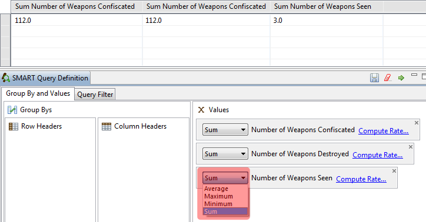
Calcular Taxa/Taxas de Encontro
A SMART pode fornecer taxas de encontro para as Opções de Valor x. Os valores base são calculados em relação à taxa de encontro escolhida para fornecer quantas Observações/Incidentes por X...
Essas taxas são acessadas através do link Calcular Taxa. Se várias Taxas de Encontro forem necessárias no resumo, o item Valor precisará ser adicionado quantas vezes forem necessárias.

No exemplo a seguir, a contagem de ameaças (incidentes) por Distância, Horas/Pessoa e Patrulhas é resumida por Equipes. A saída deste resumo mostra que a Equipe 2 está encontrando quase 10 vezes mais ameaças por distância percorrida como Equipe 1 e aproximadamente 2,5 vezes mais observações por quilômetro do que a Equipe 3.
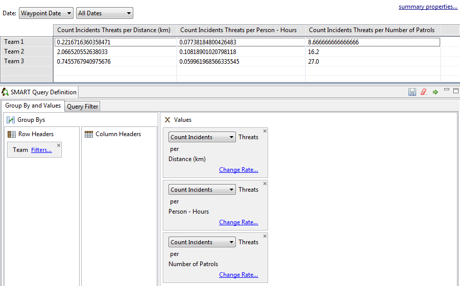
A consulta de resumo de grade do SMART resume a consulta em uma grade definida pelo usuário e gera os resultados em um formulário tabular ou em uma saída do mapa raster. A saída do mapa raster fornece um mapa de calor dos resultados resumidos que podem ser rapidamente interpretados pelos usuários para ver onde os problemas estão localizados. Os valores X para o Resumo em Grade são construídos da mesma forma que as consultas de Resumo, com a principal diferença sendo que nenhuma Opção Grupo Por está disponível.
| Ícone ou Link | Descrição |
| Filtra a data da consulta. | |
| Usado para alterar o nome da consulta. | |
| Alterar o nome da consulta. Filtra os campos retornados nos resultados da consulta. | |
|
Localização de consultas e resumos salvos. Por padrão, existem duas pastas (Consultas de Área de Conservação e Minhas Consultas). Qualquer conta de usuário pode salvar em Minhas Consultas, mas os itens salvos só podem ser acessados pela conta de usuário que as criou. Somente contas de administrador e gerente podem ser salvas na pasta Consultas da Área de Conservação. |
| E | Executa a consulta. |
| Salva a consulta. | |
| Limpar a consulta. | |
| Abre janelas para "Guia Grupo Por Valores" e "Guia Filtro". | |
| Opção para escolher as projeções disponíveis para construir a grade. | |
| Define o tamanho da grade com base nas unidades de mapa da projeção. | |
| O valor do Resumo em Grade. |
O exemplo a seguir é de um resumo de grade simples para mostrar as ameaças observadas com base em uma grade de 0,01 (graus). Em uma consulta de grade, há sempre uma exibição básica de onde as patrulhas foram.
Essas entradas recebem um valor de 0. Qualquer valor maior que 0 indica a presença do valor de grade escolhido.

Filtros de Grade
Filtros adicionais podem ser aplicados a consultas em grade da mesma maneira que com outros tipos de consulta. Selecionar a guia Filtro abrirá a estrutura para adicionar filtros adicionais à consulta.
Nota: Se as Taxas de Encontro forem aplicadas aos Valores da Grade X, um filtro adicional (Filtro de Taxa) aparecerá na Guia Filtro. Esse filtro adicional pode permitir que o usuário ajuste os parâmetros do filtro para produzir um filtro de várias camadas aplicado ao item Valor da Grade X.
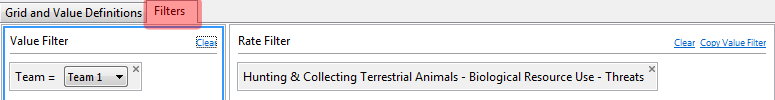
Os relatórios SMART são altamente configuráveis e permitem uma ampla variedade de relatórios padronizados. As informações nos relatórios podem ser geradas dinamicamente com base nos resultados de consultas e resumos SMART. Um dos principais componentes da SMART é sua capacidade de mapeamento, e os relatórios SMART permitem que os mapas sejam incluídos e personalizados para se adequarem aos relatórios. Os relatórios SMART contêm muitos elementos de relatório comuns (tabelas, gráficos, imagens, etc ...), além de outros elementos (mapas e resultados de consulta dinâmica) que resultam em um poderoso pacote de relatórios.
Barra de Ferramentas da Lista de Relatórios
A barra de ferramentas do relatório possui ícones para criar, editar, executar, exportar e excluir relatórios.

Ícones da Barra de Ferramentas de Relatório
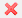 |
Exclui o relatório selecionado(s) |
| Abre a perspectiva de relatório | |
| Criar um novo relatório | |
| Edita o relatório selecionado(s) | |
| executa e exporta os relatórios selecionados(s) | |
| Executa o(s) relatório(s) selecionado(s) |
Mostrar Editor de Relatórios
O Editor de Relatórios consiste em alguns componentes básicos, que contêm sua própria funcionalidade e têm sua própria finalidade. Na criação de relatórios básicos a intermediários, provavelmente haverá muitas funções do relatório SMART que não serão usadas.
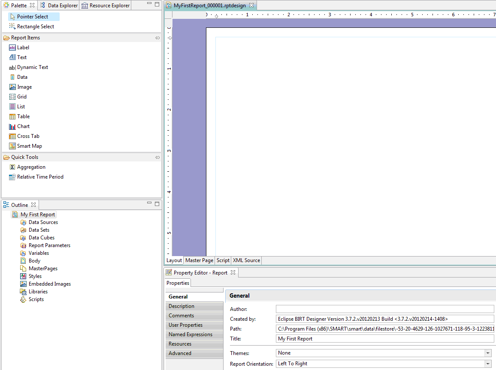
Janela de Design
A Janela de Design é onde os componentes do relatório são organizados. Essa janela faz a previsão de como será o relatório final, pois os relatórios geralmente são baseados em dados dinâmicos. A janela permite que o layout dos objetos seja adicionado e personalizado quanto ao conteúdo, tamanho e estilo.
As guias Layout e Página Mestra na parte inferior são as as mais usadas pela maioria dos usuários. É altamente recomendável não fazer edições nas guias Script ou Fonte XML, a menos que você seja um usuário avançado que entenda os riscos de editar diretamente o código usado para gerar o relatório.
Editor de Propriedade
Esta janela é usada para editar as propriedades dos objetos que foram carregados na Janela de Design. As opções do Editor de Propriedades serão alteradas se você mover entre as guias Layout e Página Mestra.
Propriedades do Relatório (guia Página Mestra)
Usado para especificar propriedades gerais da página mestra do relatório.

Contorno
O Contorno é usado para organizar os objetos usados para criar e organizar seu relatório. Objetos e Elementos são importados para o contorno e permitem fácil acesso a esses componentes quando os relatórios são projetados na Janela de Design. Se um objeto é comumente usado por muitos relatórios (tais como logotipos, títulos, etc), esses objetos podem ser exportados para a biblioteca Recursos Compartilhados. Isso é feito clicando com o botão direito do mouse no objeto e selecionando "Exportar para Biblioteca..."

Explorador de Recursos
O Explorador de Recursos é onde os Recursos Compartilhados da biblioteca são acessados. Aqui é sãoo salvos elementos de relatório comuns que são usados em vários relatórios, como logotipos, por exemplo. Se um objeto provavelmente for usado para a maioria, se não para todos os relatórios, é melhor compartilhar o objeto na biblioteca Recursos Compartilhados. Qualquer criação e edição de relatórios pode acessar imediatamente esses objetos e não precisa ser importada ou vinculada a nenhum deles.
Nota: Recomenda-se limitar os objetos na biblioteca Recursos Compartilhados a objetos que serão usados pela maioria, se não por todos os relatórios. A adição de muitos objetos à biblioteca afeta negativamente o desempenho da estrutura de relatórios.

Item de Relatório
Itens de Relatório contêm muitos dos objetos usados para criar o relatório. Esses objetos são selecionados e inseridos na janela do editor de relatórios para criar o relatório desejado.
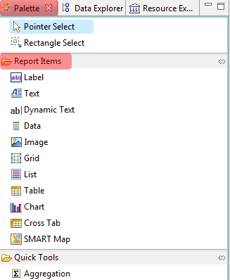
O modelo de dados da SMART é a base da entrada, análise e relatório de dados. A definição de um modelo de dados para atender às necessidades de uma Área de Conservação é crucial para garantir que a entrada de dados, a análise e o relatório trabalhem juntos para fornecer as informações necessárias para o adequado gerenciamento das patrulhas. O software SMART vem com um modelo de dados padrão que pode ser personalizado por um administrador do SMART para atender totalmente aos requisitos da Área de Conservação.
A estrutura do modelo de dados SMART é baseada em uma estrutura em árvore, composta de nós (Categorias) e uma série de “folhas” (Atributos) que podem ser associadas a qualquer número de categorias da árvore.
As categorias podem ser com ou sem atributos e podem ser um pai de outras categorias ou filho para outras.
A SMART suporta tipos de atributo de Numérico, Texto, Lista, Árvore e Booleano. O uso dos tipos de atributos dependerá da natureza das informações de observação coletadas no campo.
Exemplos e usos recomendados de tipos de atributos são:
| ÍCONE | TIPO | DESCRIÇÃO |
| Numérico | Larguras, comprimentos, quantidades, números de animais, pessoas ou itens | |
| Lista | Nomes de itens em que a lista é conhecida e a lista não é muito longa | |
| Texto | Nomes específicos que não podem ser pré-carregados em uma lista | |
| Árvore | Uma coleção de atributos que podem ser organizados em um formato hierárquico ou lógico, como espécies animais | |
| Data | Atributo específico de data | |
| Booleano | Qualquer situação que possa ser respondida com um Sim ou Não |
Um atributo não pode existir sozinho. É uma extensão de uma categoria e deve estar associado a uma categoria. Por outro lado, uma categoria não requer necessariamente atributos.
Atributos podem ser associados a uma única categoria ou a várias categorias.
Categorias, atributos ou valores dentro de atributos podem ser excluídos do modelo de dados ou desabilitados.
Exclusão - Remove completamente o recurso do modelo de dados. Isso só pode ser feito se não houver dependências. Uma dependência pode ser uma categoria filho, atributo, observação registrada ou consulta/resumo. Se não houver dependências, o recurso poderá ser completamente removido do modelo de dados.
Desativar - Se houver dependências ou o administrador não desejar remover totalmente o recurso, ele poderá ser desativado. A desativação remove a capacidade de registrar observações com base no recurso desativado, mas preserva a capacidade de realizar análises no recurso. Desativar/Ativar categorias é um processo muito mais fácil, porque não requer que todas as dependências sejam desabilitadas antes de prosseguir com a categoria de nível superior. Também permite a reintrodução, se necessário. Uma Categoria ou Atributo desativado aparecerá em cinza até ser reativado.
Categorias e atributos podem ser reposicionados arrastando o objeto para uma nova posição dentro dessa camada.
Os atributos de árvore podem ser pré-definidos fora do SMART em um formato XML e importados para o modelo de dados usando o atributo Importar opção ao criar um novo atributo. O uso mais comum desse recurso seria a criação de uma nova Área de Conservação e definir a lista Espécies para a Área de Conservação.
O modelo de dados padrão não contém uma lista de espécies predefinida. A opção Importar permite uma importação personalizada de uma lista de espécies que traz apenas as entradas desejadas para o modelo de dados da Área de Conservação. Outros atributos de árvore podem ser importados se o XML for construído adequadamente.
Se entradas duplicadas forem selecionadas em importações adicionais, o processo de importação validará as entradas recebidas para o que está disponível e filtrará quaisquer valores redundantes.
Quando um atributo ou categoria é criado, uma chave exclusiva é gerada automaticamente. As chaves geradas são geralmente o nome comum sem espaços ou outros caracteres. Se um nome comum for igual a um nome anterior, a SMART acrescentará um número ao final do nome comum para torná-lo exclusivo. Se o nome comum começar com um número, a SMART soltará o(s) número(s) para que a chave inicie com um caractere alfabético.
Nota: É altamente recomendável deixar as chaves não editadas, a menos que você entenda completamente o que poderia acontecer se as chaves fossem editadas.
Motivação
O modelo de dados atual foi projetado para a flexibilidade da análise de dados e não para a eficiência de entrada de dados do usuário no campo. Por exemplo, o modelo de dados padrão tem uma variedade de categorias de nível superior (Animais, Características, Pessoas) que os usuários de entrada de dados de campo nem sempre desejam selecionar cada vez que fazem uma observação. Para melhorar a eficiência da entrada de dados, esse documento fornece uma gama de opções para permitir que os usuários configurem a entrada de dados com o objetivo de torná-la mais eficiente.
As opções abaixo são cruciais para o sucesso da integração do SMART CyberTracker, pois permitem que o modelo de dados SMART seja implantado de maneira rápida e fácil com o CyberTracker de uma maneira que aproveite a riqueza e a facilidade de uso que os usuários do CyberTracker já esperam.
O escopo inicial do trabalho é atualizar somente o plug-in do SMART CyberTracker para usar os novos recursos descritos abaixo. Não haverá alterações na interface de entrada de dados SMART existente. No entanto, como trabalho adicional, a UI de usuário de entrada de dados SMART pode ser atualizada para usar os novos recursos.
Modelo de Dados configurável “Coleta de Dados”
Essa extensão de aplicativo permitiria que os usuários criassem um modelo de dados de “coleta de dados” personalizado. Esse modelo de dados seria semelhante ao modelo de dados principal. No entanto, ele permitiria aos usuários reagrupar categorias em um formulário que faça mais sentido para usuários de entrada de dados e, potencialmente, forneça propriedades adicionais para usar na interface de entrada de dados.
Descrição
Cada categoria e todos os seus atributos associados (incluindo atributos herdados) no modelo de dados principal seriam considerados um componente de entrada de dados. Os usuários poderão criar uma estrutura de árvore personalizada, adicionando esses componentes de entrada de dados à árvore. Os usuários não podem adicionar novos componentes de entrada de dados nem adicionar novos atributos. Essas funções teriam que ser feitas no modelo de dados principal.
Qualquer componente de entrada de dados pode ser renomeado. Isso significa que categorias e atributos podem ser renomeados para o modelo de dados configurado. No Cybertracker, por exemplo, uma categoria com um nome longo pode precisar ser mais curta para ser exibida corretamente na tela.
Atributos de lista e árvore podem ter seus itens de lista ou nós de árvores renomeados.
Atributos do Modelo de Dados - Desativar/Valores Padrão
Essa extensão permitiria que os usuários desativassem os atributos do modelo de dados apenas para fins de entrada de dados e/ou fornecessem um valor padrão a ser usado para todas as observações da categoria associada.
Os Atributos teriam duas propriedades adicionais:
Nota: Provavelmente, as modificações teriam que ser feitas pelo CT para suportar os valores padrão. No entanto, a propriedade de mostrar atributo ainda pode ser aplicada. Caso os valores padrão não sejam usados, somente os atributos não obrigatórios terão a propriedade “mostrar atributo”.
Essas propriedades se aplicariam à combinação de categoria/atributo fornecidos. Portanto, se um atributo for usado em várias categorias, ele poderá ter configurações diferentes para cada categoria. Considere, como exemplo, o seguinte modelo de dados principais:

Os atributos de Ameaça e Infração são herdados pelas categorias Pessoas, Sinal Humano, Abrigo ou Acampamento e Armas e Equipamentos. No modelo de dados principais, desabilitar o atributo Ameaça desabilita-o para todas as categorias. No entanto, no modelo de dados configurado, os usuários poderiam definir a propriedade “mostrar atributo” com valor diferente para cada uma dessas subcategorias, conforme mostrado no exemplo de modelo configurado abaixo:

Nota: além de desabilitar atributos específicos, os atributos também podem ser ordenados de maneira diferente em categorias diferentes.
Atributos de Árvore Recolhíveis
Essa extensão permitiria que os usuários especificassem se um atributo de árvore deveria ser recolhido ou não recolhido. Recolher um atributo de árvore converteria a árvore em uma única lista incluindo todos os nós de folha da árvore. Nesse caso, os usuários de entrada de dados não poderão selecionar nós intermediários como valores de atributos. Árvores não colapsadas permaneceriam como estruturas de árvores.
Isso é especificado em um nível de categoria/atributo. Portanto, se um atributo for reutilizado em várias categorias, cada categoria poderá ter configurações personalizadas para o atributo. Para uma categoria, eles podem optar por recolher a árvore em outra categoria que possam escolher.
Listas de Seleção Múltipla
Listas de seleção múltipla permitiriam ao usuário definir um único atributo de lista como uma lista de seleção múltipla para cada categoria. As listas de seleção múltipla devem ser exibidas para o usuário de entrada de dados de uma maneira que permita que o usuário da entrada de dados selecione vários itens. Em seguida, devem ser feitos prompts para cada atributo adicional associado à categoria de cada item selecionado na lista de seleções múltiplas.
Somente um único atributo por categoria pode ser selecionado como uma lista de seleção múltipla.
O atributo da lista de seleção múltipla deve ser o primeiro atributo na lista de atributos associados à categoria. Portanto, os usuários devem primeiro selecionar todos os valores de item de lista possíveis e, em seguida, inserir atributos adicionais sobre o item da lista.
Exemplo:
Considere a seguinte categoria/combinação de atributos.

A análise entre as Áreas de Conservação ocorre no âmbito da Análise da Área de Conservação Cruzada. Essa estrutura permite consultas entre as Áreas de Conservação armazenadas dentro de uma instalação da SMART. A Análise da Área de Conservação Cruzada requer mais de uma área de conservação carregada dentro de uma instalação da SMART.
1. Mais de uma Área de Conservação está carregada na SMART
2. Um nome de usuário e senha são comuns às Áreas de Conservação disponíveis

Para efetuar login, o usuário seleciona "CCAA - Análise da Área de Conservação cruzada" e é necessário inserir o nome de usuário e a senha comuns às Áreas de Conservação.
Depois de fazer o login na SMART, abra a lista de Áreas de Conservação disponíveis para análise. Essa tela permite que o usuário escolha quais Áreas de Conservação (CAs) serão incluídas na análise. O usuário SMART pode selecionar quais CAs incluir clicando no link "Modificar ..." . Será aberta uma janela onde o usuário pode selecionar Áreas de Conservação específicas para análise. Depois que as Áreas de Conservação forem selecionadas, a SMART validará os modelos de dados selecionados e procurará os componentes comuns que estarão disponíveis para uso nas Consultas ou nos Relatórios.
Depois que as Áreas de Conservação selecionadas forem analisadas para elementos comuns, o usuário poderá iniciar o processo de criação de consultas e relatórios.
Perspectiva Geral
Lista de ícones de visão geral da Análise de Área de Conservação Cruzada
| ÍCONE | DESCRIÇÃO |
| Perspectiva de Consulta | |
| Perspectiva de Relatório | |
| Cria um novo relatório | |
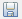 |
Salvar Consulta |
| Consultar Salvar Como | |
| Exportar Consulta | |
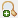 |
Criar Consulta |
| Atualizar o Windows | |
| Perspectiva de Mapa | |
| Lista de Análise de Área de Conservação Cruzada | |
| Abre a caixa de diálogo para selecionar Áreas de Conservação para análise |
Nota: Os ícones usados na Análise da Área de Conservação Cruzada são os mesmos ícones usados pelo resto do programa.
A criação de mapas base na estrutura da Análise da Área de Conservação Cruzada segue procedimentos semelhantes aos de uma única Área de Conservação. A exceção a isso é para as camadas que representam os limites individuais da Área de Conservação. Essas camadas são carregadas no mapa base da mesma maneira que qualquer outro arquivo de forma.
Nota: A Página de Conexão da Área SMART não menciona os limites.
Depois que as camadas tiverem sido adicionadas e tematizadas, o usuário Admin poderá salvar o mapa de base para uso futuro nas consultas ou relatórios da CA cruzada.


Os filtros de consulta (patrulha e modelo de dados) disponíveis para uso são aqueles componentes comuns a todos os modelos de dados. A SMART pesquisa o modelo de dados exclusivo e as chaves de patrulha para extrair elementos comuns a todas as Áreas de Conservação selecionadas. Se um modelo de dados ou uma chave de patrulha tiver sido alterada, o software não poderá consultar outras áreas, a menos que todas as outras chaves tenham sido atualizadas da mesma forma. A preservação de chaves no modelo de dados e os parâmetros de patrulha permitem um maior sucesso na criação de consultas na estrutura de análise da área de conservação cruzada. Alterar chaves elimina essa habilidade.
Nota: É altamente recomendável que as edições das chaves exclusivas sejam feitas somente se todas as implicações forem conhecidas.
Quaisquer categorias e atributos não presentes em todas as Áreas de Conservação mescladas não aparecerão na lista Filtro de Consulta.
Um Relatório de Análise de Área de Conservação Cruzada é criado usando o mesmo fluxo de trabalho de um relatório padrão:
Assim como nos relatórios SMART padrão, os relatórios de análise da área de conservação cruzada são vinculados às consultas salvas. Qualquer relatório de Análise de Área de Conservação Cruzada que precise se vincular a uma consulta deve primeiro criar consultas específicas dentro da estrutura de análise de área de conservação cruzada. Depois que as consultas forem salvas, elas estarão disponíveis para uso nos relatórios de análise da área de conservação cruzada.
Nota: os conjuntos de dados do relatório vinculados a tabelas não precisam de nenhum trabalho adicional para acessar as informações.
Um Relatório de Análise de Área de Conservação Cruzada é criado usando o mesmo fluxo de trabalho de um relatório padrão.